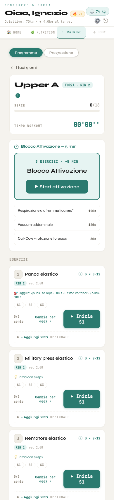
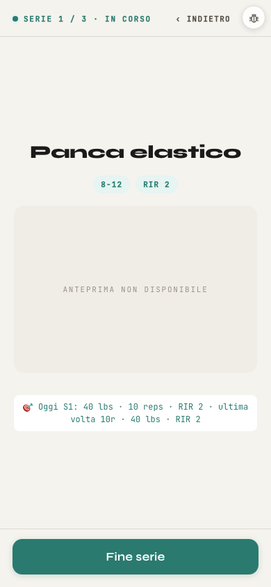
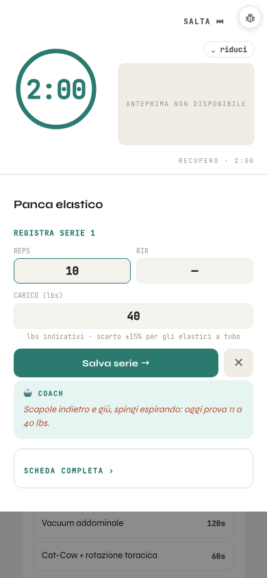

A sinistra la pagina com'è oggi: è quella vera, fotografata a 390 px con dati di prova. A destra come diventa.
Cambia solo l'aspetto: la pagina fa le stesse cose, con gli stessi tasti e gli stessi passaggi. I numeri gialli 1 rimandano alle note:
quelle sono le cose da snellire nel giro 2, segnate ma non fatte.
Colore della testata:
1 DI 3La seduta, prima di iniziare
Oggi

Proposta
🔥 21
OGGI · FORZA · RIR 2 1
Upper A
0/18serie
00'00''tempo
6esercizi
ProgrammaProgressione
Prima di iniziare · circa 5 min 2
Blocco Attivazione3 esercizi
Respirazione diaframmatica 360°120s
Vacuum addominale120s
Cat-Cow + rotazione toracica60s
Esercizi · 6
1
Panca elastico i
3 × 8-12 · RIR 2 · rec 2:00
Oggi S1: 40 lbs · 10 reps 3
0/3
Cambia per oggi+ Nota4
2
Military press elastico i
3 × 8-12 · RIR 2 · rec 2:00
Inizia con 8 reps
0/3
Cambia per oggi+ Nota
3
Rematore elastico i
3 × 8-12 · RIR 2 · rec 2:00
Inizia con 8 reps
0/3
Cambia per oggi+ Nota
4
Lat machine elastico i
3 × 8-12 · RIR 2 · rec 2:00
0/3
… Alzate posteriori, Pallof press: uguali
Home
Nutrition
Training
Body
Cosa cambia nell'aspetto
La testata blu della zona Training prende il posto di «Benessere & Forma · Ciao, Ignazio» e delle linguette in alto: dentro ci sono il ritorno, il fuoco, l'insetto del feedback, il giorno, serie e tempo, Programma · Progressione.
Le linguette Home · Nutrition · Training · Body scendono in basso, come in MB21.
Esercizi e attivazione diventano elenchi bianchi a righe, come le Impostazioni dell'iPhone.
«Inizia S1» resta su ogni esercizio, diventa un tasto tondo.
Da snellire nel giro 2
«RIR 2» è scritto in testata e di nuovo in ogni esercizio.
L'attivazione oggi è detta due volte (il riquadro e l'elenco): basta un riquadro.
«Oggi S1: …» e «Inizia con 8 reps» dicono la stessa cosa in due modi.
«Cambia per oggi» e «+ Nota» ripetuti 6 volte: un tasto «…» per riga. E «Inizia» forse solo sul prossimo esercizio.
2 DI 3La serie in corso
Oggi

Proposta
SERIE 1 DI 3 · IN CORSO
Panca elastico
8-12RIR 2
ANTEPRIMA NON DISPONIBILE 1
Oggi
Serie 140 lbs · 10 reps · RIR 2
L'ultima volta 240 lbs · 10 reps · RIR 2
Cosa cambia nell'aspetto
La testata blu con il pallino «in corso», il nome grande e le due pillole.
La riga «Oggi S1 · ultima volta» diventa un piccolo elenco a due righe: cosa fare adesso, cosa hai fatto la volta prima.
«Fine serie» resta in fondo, a tutta larghezza, nel blu della zona.
Da snellire nel giro 2
Senza GIF il riquadro grigio occupa mezzo schermo per dire «non disponibile».
Se oggi e l'ultima volta coincidono, una riga sola basta.
3 DI 3Il recupero e il registro della serie
Oggi

Proposta
⌄ riduci
2:00RECUPERO
ANTEPRIMA NON DISPONIBILE
Panca elastico · registra serie 1
1 · Quante ripetizioni?
10reps
2 · Con quanto?
40lbs
lbs indicativi · scarto ±15% per gli elastici a tubo 1
3 · Quante ne avevi ancora? (RIR)
–facoltativo
Il coach
PIRSI
Scapole indietro e giù, spingi espirando: oggi prova 11 a 40 lbs.
Scheda completa›
Cosa cambia nell'aspetto
Il recupero sta nella testata blu: l'anello del tempo grande e bianco, «Salta» e «riduci» dove sono oggi.
Le tre caselle diventano tre domande numerate, una sotto l'altra, nello stesso foglio: ripetizioni, carico, RIR. Stessi campi, già compilati come oggi.
Il coach e «Scheda completa» vanno in un elenco a righe.
Da snellire nel giro 2
La frase sugli elastici ricompare a ogni serie: basterebbe nella scheda dell'esercizio.
Il tasto ✕ accanto a «Salva» non dice cosa fa.
Nella foto di oggi la riga del coach è riempita con una frase d'esempio: nel banco il coach non ha rete. Tutto il resto è la pagina vera.
Quando si costruisce
La veste andrà dietro un interruttore, come OGGI_V5 in MB21: spento, la seduta resta quella di oggi.
Bip, Pallof e ripetizioni per lato, che ZT-Training sta correggendo adesso, non si toccano: cambia solo come si vede.
Il blu pieno (A) è un colore nuovo, da aggiungere fra i nomi dello stile; l'azzurro di sempre resta come velo chiaro (pallini, suggerimenti, linguetta accesa).